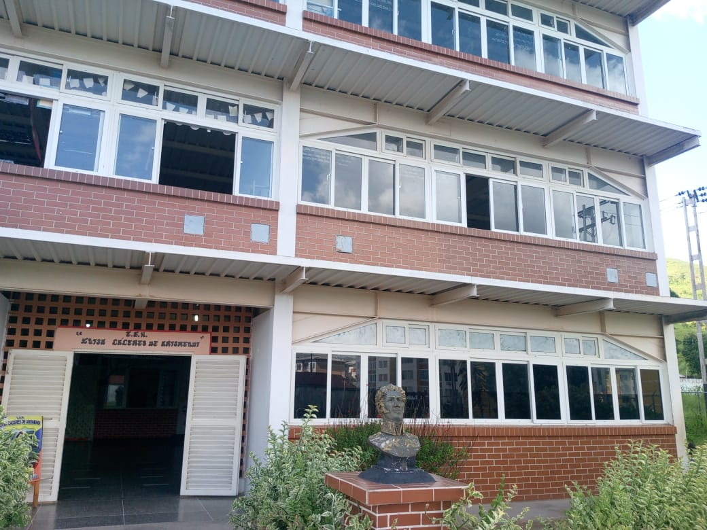
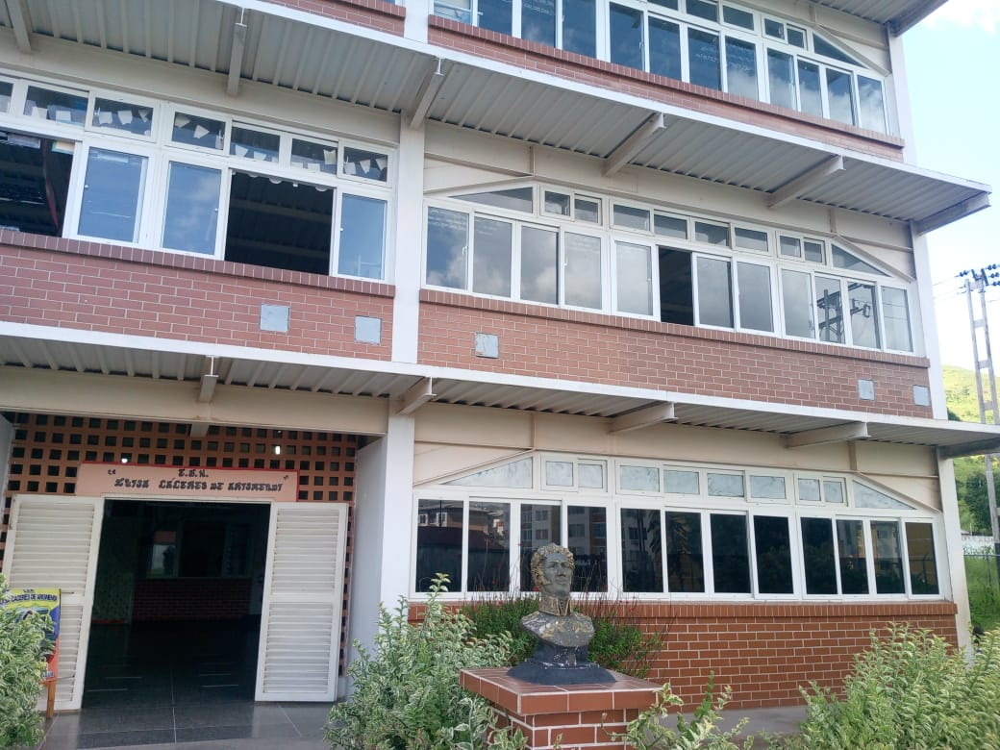

Misión
Formar nuevos(as) republicanos(as) humanistas, socialmente conscientes y comprometidos con el momento histórico coyuntural del país, integrados(as) de forma productiva a la vida útil en su comunidad, explotando la creatividad y la innovación para el fortalecimiento de los valores y la relación escuela, familia y comunidad.